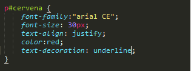
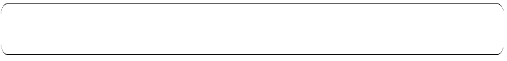
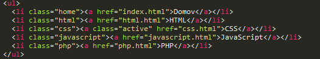

CSS – kaskádové štýly – je štýlovací jazyk používaný na určenie vzhľadu dokumentu vytvorenom v značkovacom jazyku. To znamená, že dokument obsahuje len dáta, pričom všetky informácie o tom, ako sa tieto dáta majú zobraziť (formátovanie, pozície) určujú kaskádové štýly.
Selektory v pravidlách kaskádových štýlov (stylesheets) popisujú prvky, triedy, identifikátory objektov a ich vzájomné kombinácie, na ktoré sa definovaný štýl má aplikovať.
body { vlastnosť1: hodnota1; vlastnosť2: hodnota2; ... }
U každého selektora je možné špecifikovať aj atribúty, ktoré sú uvedené pri danej HTML značke. Štýl sa potom aplikuje len na tie inštancie daného prvku, ktoré majú uvedené atribúty tak, ako je určené v selektore.
V tomto texte som pouzil zmenu textu pomocou css.
Na rozdiel od všetkých ostatných selektorov, ktoré vychádzajú z informácií uvedených v zdrojovom dokumente, prinášajú pseudo-triedy a pseudo-prvky možnosť formátovať informácie nad rámec zdrojového dokumentu. Pseudo-triedy pre formátovanie sprístupňujú informácie, ktoré nemožno zistiť zo štruktúry dokumentu (s jednou výnimkou), dynamické zmeny a výsledky interakcie dokumente s používateľom. Pseudo-prvky (pseudo-elementy) umožňujú špecifikovať niektoré prvky jemnejšie, než sú uvedené v štruktúre dokumentu (napr. prvý znak či prvý riadok prvku); a dovoľujú dokonca pridávať text, ktorý vo zdrojovom dokumente vôbec nie je.
Pseudo-trieda: X: first-child Pseudo-triedy odkazov: A: link a A: visited Dynamické pseudo-triedy: X: hover, X: active a X: focus
Upravený pomocou css atribútou
A klasický hr tag v HTML
Hodnota 5px označuje silu orámovania, ďalšia hodnota solid; určuje typ čiary a tretia hodnota určuje farbu orámovania napr.black.
Jednoduché orámovanie
Dotted-bodkované orámovanie
Dashed-čiarkované orámovanie
Dvojité orámovanie
Použité v jednom orámovaní
Na našej stránke sme vytvorili jednoduché responsívne menu za pomoci CSS.
